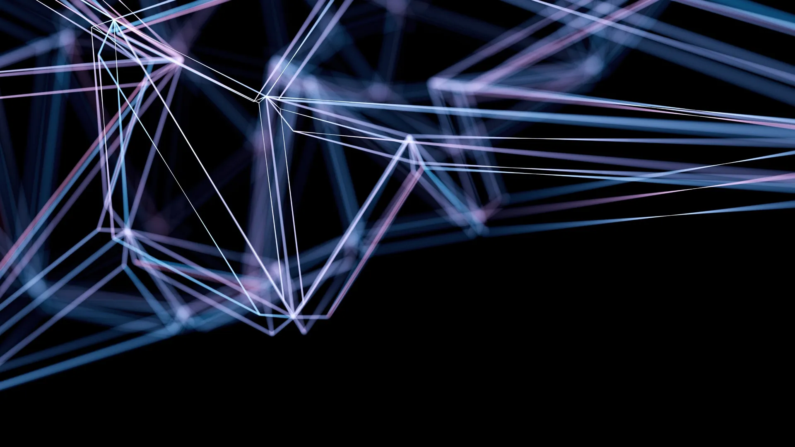
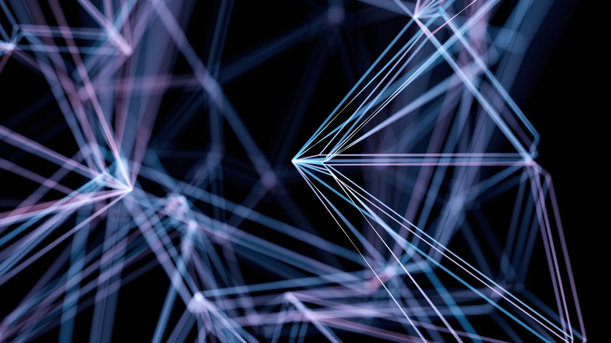

Find the signal
We listen, research, and define the real challenge before jumping into solutions.
Independent digital studio
We unite strategy, thoughtful design, and creative technology to build meaningful digital experiences for ambitious brands.
Made for ambitious teams
What we do
From the first sketch to ongoing growth, choose the expertise you need or bring us the whole ambitious brief.
Explore all servicesResponsive, accessible websites with thoughtful interactions, clean code, and a foundation that scales with your business.
Explore web development Strategy · Design · Clean code
Strategy · Design · Clean code
Technical foundations, useful content, and search strategies that turn visibility into sustainable organic growth.
Explore SEO
Technical · Content · GrowthChannel-aware campaigns that bring brand thinking and performance data together around a clear goal.
Explore digital marketingPractical AI workflows that connect your tools, reduce manual effort, and keep your team focused on higher-value decisions.
Explore AI automation Discover · Connect · Automate
Discover · Connect · Automate
Research-led journeys and polished interfaces that make complex products feel clear, useful, and distinctly yours.
Explore UI UX design
Research · Prototype · InterfaceMemorable identities built from strategy, not trends, with a flexible visual language for every brand touchpoint.
Explore logo design Strategy · Identity · System
Strategy · Identity · System

About ALIFY
We bring strategic thinking, expressive design, and reliable technology into one focused creative partnership.
That means fewer handoffs, clearer conversations, and work that stays connected to the original idea—from the first workshop to the final release.
How we work
No mystery and no unnecessary layers—just four focused stages that keep every decision connected to your goals.
We listen, research, and define the real challenge before jumping into solutions.
We turn insight into a focused roadmap with clear priorities and shared expectations.
We design, prototype, and build in collaborative cycles, so you see progress early.
We launch, learn, and refine around real feedback and the opportunities ahead.
Why ALIFY
The right mix of thinking, making, and collaboration—without the complexity that usually slows ambitious projects down.
Every creative decision starts with your audience, your goals, and a clear reason to exist.
Strategy, design, development, and growth stay in the same conversation from start to finish.
Direct collaboration, visible progress, and honest feedback keep everyone confidently aligned.
No recycled templates or one-size-fits-all answers—just a solution shaped around your brand.
Expressive experiences that also prioritize accessibility, usability, speed, and maintainability.
Flexible systems and thoughtful foundations that can evolve as your team and ambitions grow.
Selected work
A glimpse at how we bring strategy, expression, and technology together across different digital challenges.
View all projectsClient perspectives
Common questions
A few helpful answers about starting a project and working together.
View all FAQsWe work on brand identities, websites, digital products, growth campaigns, and practical AI automation—either as focused engagements or connected end-to-end projects.
Bring us the challenge, the rough sketch, or the ambitious goal. Let’s shape what comes next together.
Start a project